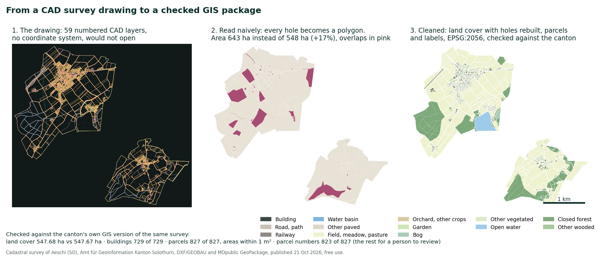
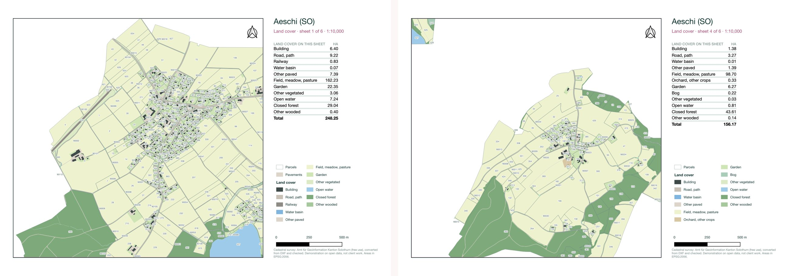

AI agents can now take on real production work in GIS: converting drawings, building map books, writing the scripts in between. They are fast, patient and often right. When they are wrong, the result usually still looks plausible: a map that renders, a table with a number in every row. This guide shows three jobs done with an agent on real open data, how to keep client data out of the prompt, and the checks that catch plausible errors before a client does.
It's written for GIS analysts and teams starting to work with agents and assistants such as Claude Code, Antigravity, Copilot or ChatGPT, and for the people who sign off their outputs. The principles don't depend on the tool.
Where this comes from. Every failure below happened in the pipelines behind this portfolio, written with an AI assistant and checked by hand. None comes from client work. The training is built on the same cases and designed with a trainer's method: FPIF certified trainer since 2018, classes at Universidade Júnior, and daily work with Claude Code, Antigravity and n8n.
A simple sort, done once with the whole team, settles most arguments about where AI belongs in a GIS workflow.
Some things never go into a prompt: client data that isn't cleared for it, personal data, and credentials such as API keys. Playbook A shows how to work without them.
Three jobs GIS teams do every week, each done with an agent (Claude Code) on real open data and checked against an independent answer. The times are the agent's working time in one session, from the first command to the last check. Reviewing the result comes on top.
Playbooks B and C use the cadastral survey of a small Swiss municipality, because Canton Solothurn publishes the same survey both as a CAD drawing and as GIS data, so every result can be checked against the canton's own version.
"Read(./client_data/**)" stops its file tools and commands like cat, but not a Python script that opens the file itself, and agents do most GIS work through Python. So either run the scripts yourself, or turn on Claude Code's sandbox, which blocks every process from that folder.ogrinfo -so or gdalinfo on your own machine.The task, in plain words: turn the drawing into a GeoPackage with one layer per theme, readable class names and the right coordinate system, then check it against the canton's version.

Select the image to open it full size.
The drawing had three traps, each typical of CAD deliveries:
The file starts with its symbol definitions and has no header, and GDAL, which QGIS uses to read DXF, didn't recognise it. An empty header added to a copy fixed it.
In CAD, a garden around a house is two closed lines. Read naively, the inner line becomes a second polygon: 643 ha of land cover in a 548 ha municipality. Lines inside a line of the same layer now become holes.
Curved boundaries are stored as arcs. Read in the default 4° steps, parcel areas moved by up to 22 m². With 0.25° steps every parcel is within about 1 m² of the official geometry.
| Checked against the canton's version | Result |
|---|---|
| Land cover area | 547.68 ha against 547.67 ha |
| Buildings | 729 of 729, same total area |
| Parcels | 827 of 827, each within about 1 m² |
| Parcel numbers | 823 matched; 4 left for a person, mostly where a small parcel's label sits in its neighbour |
| Coordinate system | None in the file. The coordinates were checked to sit in the Swiss LV95 range before EPSG:2056 was set |
| Layer codes | 59 numbered CAD layers named from the canton's list; 3 codes not on the list kept apart and reported |

Select the image to open it full size.
aggregate(layer:='Land cover', aggregate:='sum',
expression:=area(intersection($geometry, @atlas_geometry)),
filter:="class_en" = 'Garden' AND intersects($geometry, @atlas_geometry))The first version looped over all the classes in a single expression. The table looked complete, with a number on every row, and every row said 0.63 ha: QGIS keeps an aggregate's answer by its expression text, and the loop changed only a variable. An independent calculation of the same areas caught it, and one expression per class fixed it. All 58 printed values now match within 0.01 ha, and the six sheets add up to the municipality.
Each one produced an output that ran without errors and looked reasonable. Each one is the reason for a check that now runs every time.
A national map of 1.1 million declared parcels added up to 4.74 million ha instead of 3.86 million. The reprojection had read latitude and longitude in the wrong order, which moves and distorts every polygon.
Check · Assert the CRS and axis order when data is read, and compare one total against an official figure.
Merging satellite scenes from the same day let one scene's empty edge, flagged with a fill value, overwrite the other scene's real data. The map showed gaps where the images had none, and a question about "this gap of data" found it.
Check · Mask fill values explicitly, merge scene by scene, and count valid pixels before and after.
Yearly emissions estimated from space were compared with a register that used another unit: kilograms against kilotonnes.
Check · Units in every column name, and one known value tested for every output.
Satellite products from two processing versions sat in one time series. The upgrade itself looked like a change in the data.
Check · Record the product version of every input, use consistently reprocessed archives for trends, and compare the same days in both versions.
Some Landsat files arrived without their grid description. The first fix borrowed the grid from another file of the same tile. No errors, but one month's usable views fell from about 5,800 to 371. Comparing counts with the previous run caught it.
Check · Reconcile counts between runs, month by month. Read metadata from the source; never infer it.
A filter for short dips in greenness, meant to remove clouds, also removed the real dips when rapeseed and sunflower flower. Accuracy on the held-out year fell from 0.93 to 0.90, and rapeseed from 0.83 to as low as 0.68.
Check · A fixed held-out test, re-run after every change, broken down by class.
About 1,300 fields a month were flagged with an unexplained drop. A blind look at a random sample on the images showed that 30% of those drops were clouds or haze the satellite's own mask had marked clear, and a third were ordinary harvests and cuts.
Check · A blind visual check of a random sample on the images before any flag reaches a map.
Confidence scores were calibrated on a single held-out year, a drought summer. The next year then looked far less certain than it really was.
Check · Calibrate and test on several held-out years, never one.
A change map showed a patch with straight edges. It followed one satellite track, not the land, and was spotted by eye.
Check · Inspect composites for scene and track seams before reading change, and compare like with like.
A first version of one study filled missing inputs with simulated values. The figures looked convincing, and the study was dropped.
Check · Real data only. Anything generated is labelled as such and kept out of results.
The coordinate order and the CRS at the moment the data was read and reprojected. Swapped latitude and longitude move and distort every polygon, and the size of the error depends on where the data sits, so it isn't one constant factor to divide out. Then compare one total against an official figure before going further. Exercises like this, built from real cases, are the core of module 3.
None of these need special software. They fit in a short validation file that runs with every pipeline.
The training follows the order of this guide and works on your own data and code wherever possible. Each module has a clear outcome, a hands-on exercise, and a short check at the end that the outcome was reached.
An introduction to the guide with live examples, modules 1 and 3 in short. A good way to decide whether to go further.
Online or in person
A written review of your workflow and code, then two 90-minute sessions on your own project, with the modules that fit.
Includes the checklist and a starter instruction file
Two half-days, hands-on with your data, covering all six modules in a compact form.
Includes an instruction file and a validation template tailored to the team
Four 2-hour sessions over two weeks, exercises between sessions, a review of each participant's work, and a follow-up session a month later. Optionally, one person in the team is prepared to carry it on.
Includes all materials, tailored to your tools and data
Delivered online, or in person in Sofia, in English or Portuguese. Every team leaves with the checklist, an instruction file for its assistant, a validation template and exercises to reuse.
Each format is scoped and quoted for the team. To talk it through: ana@timebooster.ai